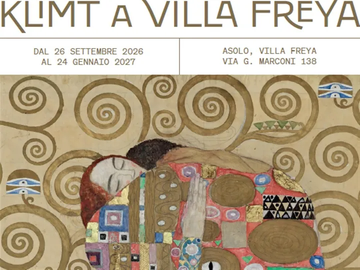

da sab 26 set a dom 24 gen
Klimt a Villa Freya
Per la prima volta nella sua storia, la splendida Villa Freya di Asolo apre le porte delle sue stanze private all'Arte. E lo fa con un debutto assoluto: una mostra straordinaria dedicata a Gustav Klimt , aperta dal 26 settembre 2026 al 24 gennaio 2027 .
 Indicazioni
Indicazioni
- Costi e prenotazioni
- Costo non indicato · Prenotazione non indicata
- Programma
- Programma da verificare. Apri la fonte ufficiale per orari e possibili aggiornamenti.
- In caso di maltempo
- Nessuna indicazione specifica pubblicata.
- Note
- Acquisito automaticamente dalla fonte.
L’EVENTO
Descrizione completa
Per la prima volta nella sua storia, la splendida Villa Freya di Asolo apre le porte delle sue stanze private all'Arte. E lo fa con un debutto assoluto: una mostra straordinaria dedicata a Gustav Klimt , aperta dal 26 settembre 2026 al 24 gennaio 2027 .
Villa Freya, dimora storica della grande viaggiatrice e scrittrice inglese Freya Stark , dove si respira un’elegante atmosfera senza tempo, è oggi pronta ad ospitare la sua prima mostra dedicata a Gustav Klimt (1862–1918). L’esposizione accoglie una preziosa raccolta di collotipie , stampe artistiche di straordinaria definizione, una raffinata selezione della rivista Ver Sacrum (1898–1903) e disegni originali del grande artista della Secessione Viennese.
Nata dalla volontà di Diego Carron e Monica Masin, la mostra crea un dialogo profondo tra il luogo, la memoria di Freya Stark e l’opera di Gustav Klimt.
La Villa conserva ancora oggi il riflesso della straordinaria scrittrice e viaggiatrice inglese che vi dimorò: uno spirito libero e sensibile ai linguaggi del mondo. L’accostamento con Klimt trova una perfetta coerenza: entrambi condividono una concezione dell’arte fondata sulla libertà intellettuale, sul legame privilegiato con il paesaggio e sulla centralità della figura femminile, intesa come principio generativo e vitale.
Il percorso espositivo unisce in un unico dialogo, vivo e stimolante, le eleganti stanze di Villa Freya al parco archeologico e botanico. Il visitatore potrà scoprire la bellezza declinata nell’arte e nella natura, attraverso un viaggio che inizia all’interno della dimora con le grafiche d’arte di Klimt e continua nel giardino romantico inglese , dove la serra restaurata custodisce alcune riproduzioni da Ver Sacrum e i grandi lecci pluricentenari convivono con le rovine un teatro romano del I sec d.C.
La mostra è organizzata in collaborazione con la Città di Asolo e il biglietto consente riduzioni sugli ingressi del complesso monumentale del borgo.
IL PROGRAMMA
Programma e orari
Appuntamenti raccolti dalle fonti elencate. Dove manca un orario, non è ancora disponibile in questa scheda.
Programma pubblicato
- 2026-09-26 — 2027-01-24 · 10:00:00
INFORMAZIONI UTILI
Prima di partire
- Controllare la fonte prima di partire.
ORGANIZZAZIONE